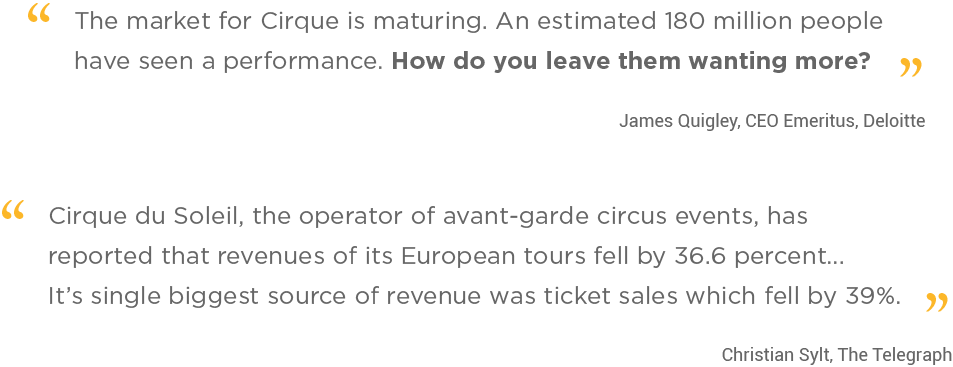
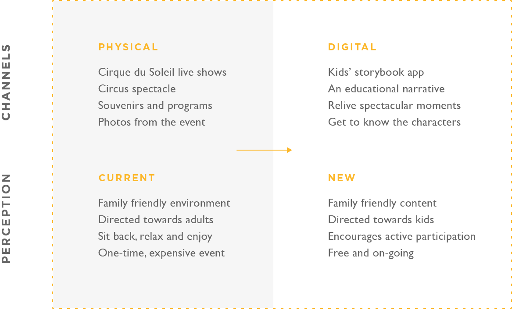

Business Problem
Cirque du Soleil has been the leading innovator of live performance art as a nouveau circus for over 30 years, and has performed for 180 million people worldwide. However, with so many people having seen at least one show, Cirque has had difficulty driving repeat attendance, dropping 36.6% in tour revenue.

Research
Brand
Cirque du Soleil's mission is "to invoke the imagination, provoke the senses, and evoke the emotions" of their audiences, something that helps them stand out against their competitors. After comprehensive research of their values, we stumbled upon their recruitment process and learned that Cirque encourages their performers to live out their dreams on stage. What we abstracted from this was a new value of "creating dreams", in which we focused our concept and product on.
We focused on the value of "creating dreams" because we saw that as Cirque's driving force for the development and production of their shows. We also saw creating dreams going hand-in-hand with extending the Cirque experience to strengthen their relationship with customers.
User Research
We spoke to people who had been to Cirque shows, and ones who had not, to see their perspectives on the brand and the experience as a whole. The people who had seen at least one show, said the even is made into an occasion, and they would not go to shows year after year, but rather once every few years, because it was expensive. (One person said that for good seats, and for their whole family to attend, it would cost up to $1000.) There were people who enjoyed the acrobatics and performances as a spectacle, while other who were more invested in the story aspect found the show much more emotional. However, the story of each Cirque show is not formally revealed, so it is up to the individual themselves to figure it out. But one thing we found in common throughout all our interviews was the level of respect people have for the company. How could we leverage that into something that would drive higher return rates?
Proposal
Although digital platforms cannot replicate the thrill of live-show experiences and past in-show interventions have proven to be distracting, even taking away from the experience, digital can offer opportunities for deep storytelling and a dissection of live-show content.
Audience
Cirque's audience is mostly comprised of adults, and sometimes families, but we chose to specifically target families. While adults enjoyed the traditional circus, children are attracted to the nouveau circus. We think the story is an important aspect of Cirque shows, and it could add so much depth to an experience. If we are able to bring out these stories, and create a lasting impression on children, it would foster a connection with the brand that carries into adulthood, as the new Cirque fans.

With this new brand framework, Cirque is one step closer to an ongoing connection with their audience, while strengthening offerings to a younger demographic. And for the customer, this would give parents more bonding time with their children, such as reading and learning together.
Area of Intervention
Cirque had previously collaborated with a design firm to create an app that was to be used during the show. However, we recognized that the most fascinating part about the Cirque experience is the wonder of the performance. This should be highlighted, not taken attention away from. So we chose our intervention point after the show, with an app to help customers relive their experience from their magical experience.
Concept
Through our Sprint process, we took three strands of insights, leverage the brand, more than a spectacle, and external inspiration, and developed them into ideas that would drive our concept. These ideas stayed true to the values or Cirque, while allowing us to pursue new avenues in digital offerings.
Persona
Our target persona, as we call "believers", are parents with young children who are looking for memorable experiences to enjoy together. On special occasions, they are willing to spend a little more, but they want to make sure the whole family finds the experience worthwhile.
Journey Framework
The second iteration of our journey framework (with the first helping us decide where our area of intervention was) helped us see when the audience would most likely first encounter our product. The lows of the post-show gave us an idea of where we could help extend the Cirque experience. Specifically, we looked into after the family went home and the day after, to advertise the app.